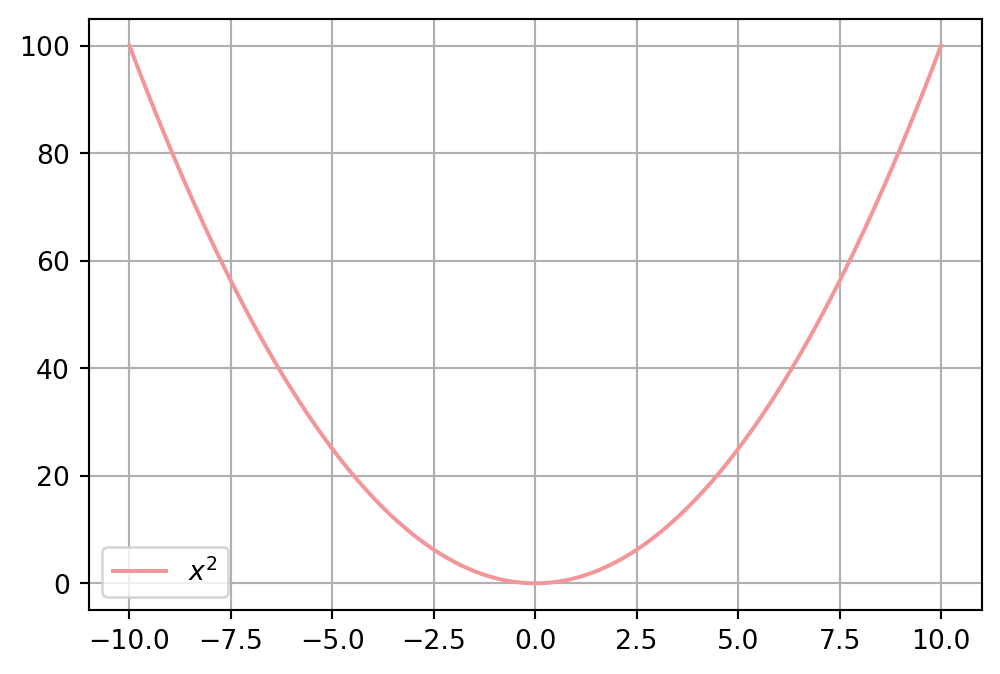

import numpy as np
a = np.arange(10)
b = np.linspace(0, 1, 10)
a + barray([ 0. , 1.11111111, 2.22222222, 3.33333333, 4.44444444,
5.55555556, 6.66666667, 7.77777778, 8.88888889, 10. ])Preview: Ctrl + Shift + K
물결로 감싸면 취소선
![]()
| 이름 | 나이 | 직업 |
|---|---|---|
| 김민채 | 29 | X |
문장 안에 들어가는 수식은 달러 기호 한 개 $를 사용합니다.
이렇게 \(E = mc^2\) 말이죠.
만약, 수식만 따로 문단을 만들어서 보여주고 싶은 경우는
달러 기호 2개 $$를 사용합니다.
수식 안에서
\\ 는 줄바꿈을 의미합니다.&가 들어있는 부분끼리 정렬을 맞춰줍니다.\begin{aligned} 와 \end{aligned} 가 필요합니다.\[ \begin{aligned} a &= b + c \\ &= d + e + f \end{aligned} \]
단축키: ctrl + shift + i
import numpy as np
a = np.arange(10)
b = np.linspace(0, 1, 10)
a + barray([ 0. , 1.11111111, 2.22222222, 3.33333333, 4.44444444,
5.55555556, 6.66666667, 7.77777778, 8.88888889, 10. ])우리가 이렇게 문장을 바로 쓰면 서식이 적용되어 나옵니다.
Ctrl + D 를 누르면 코드 처리가 됩니다.
Ctrl + Shift + I 를 누르면 이미지를 삽입할 수 있습니다.
| Col1 | Col2 | Col3 |
|---|---|---|
| 항목1 | ||
| 항목2 | ||
| 항목3 |
\(y = x^2\) 의 그래프를 -10에서 10까지 그려보세요.
import numpy as np
import matplotlib.pyplot as plt
x = np.linspace(-10, 10, 100)
y = x**2
plt.figure(figsize=(6, 4))
plt.plot(x, y, label="$x^2$", color="#f3969a")
plt.legend()
plt.grid(True) # 격자
plt.show()
#| echo: false 를 하면 코드는 문서에 들어가지 않고 결과만 나온다. #| code-fold: true 를 하면 코드가 접혀있다.